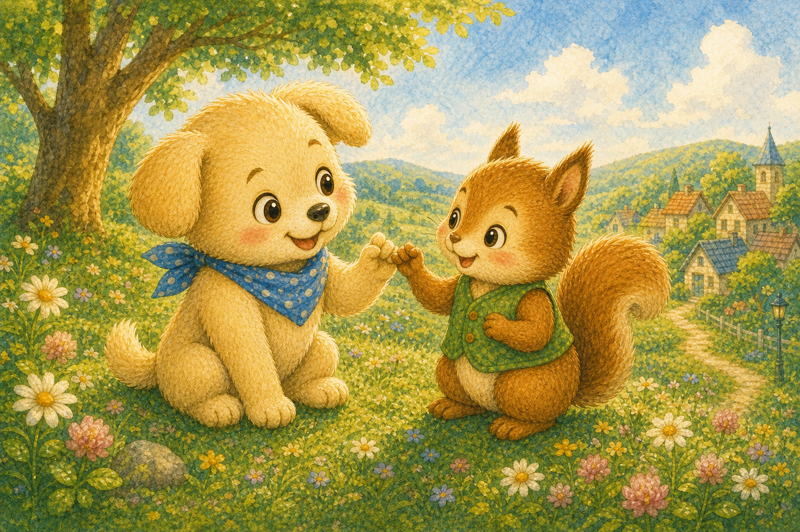
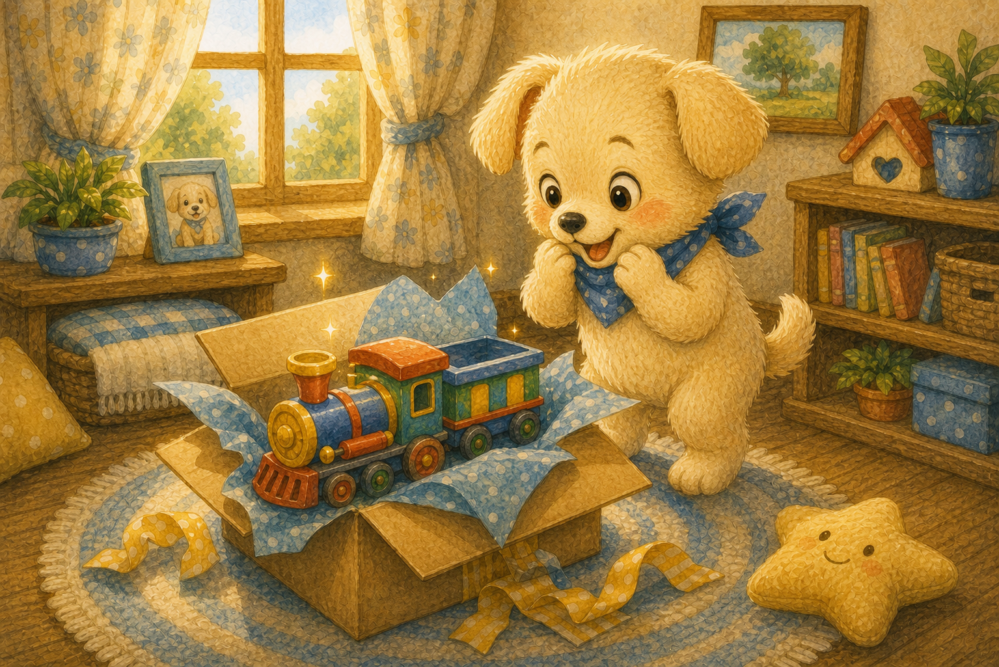
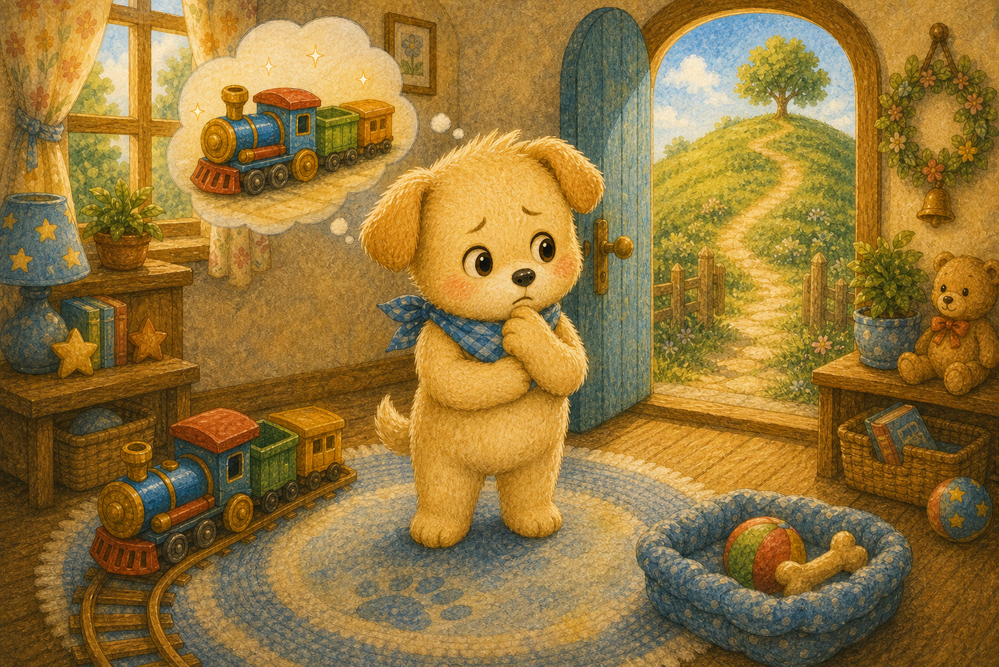
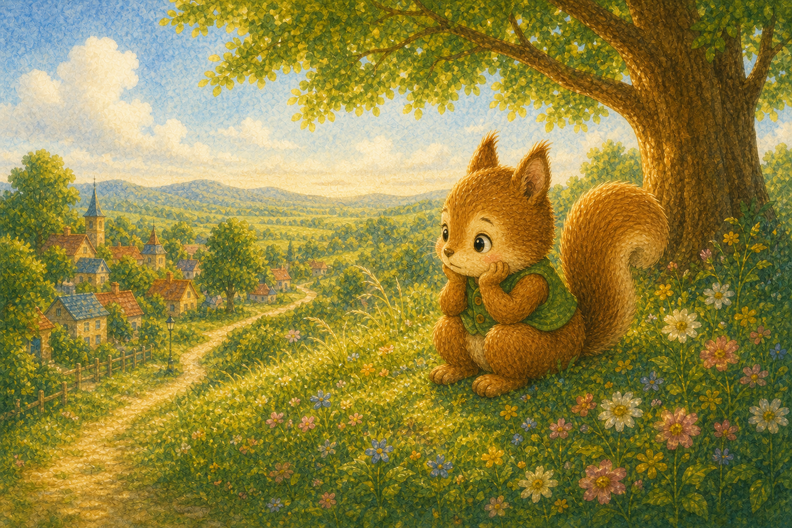
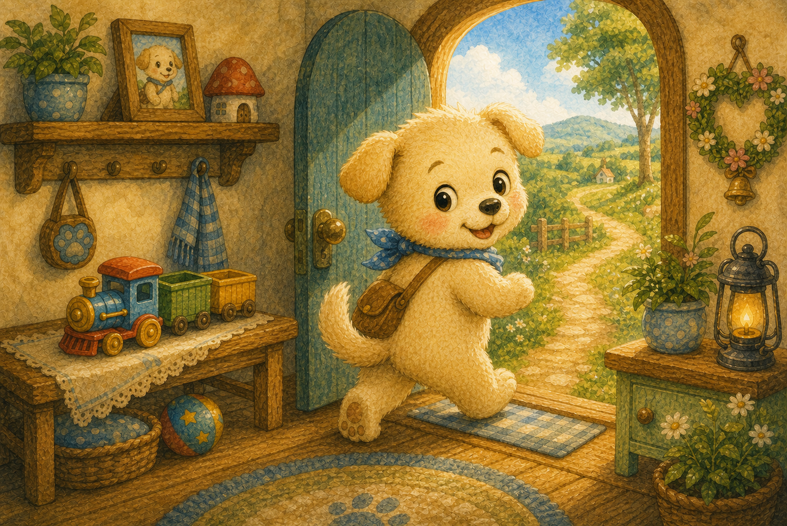
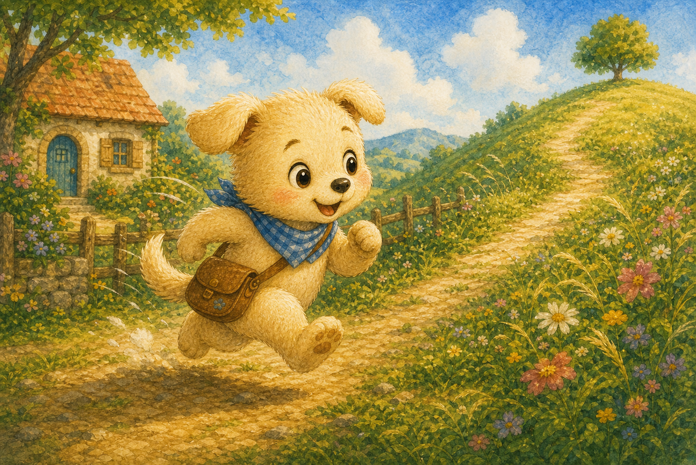
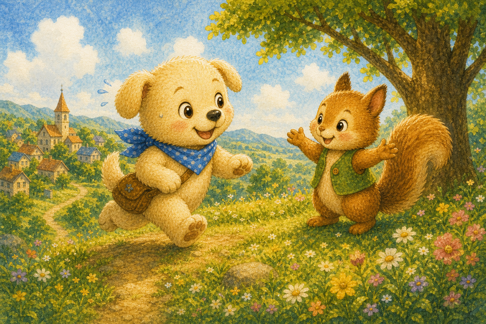
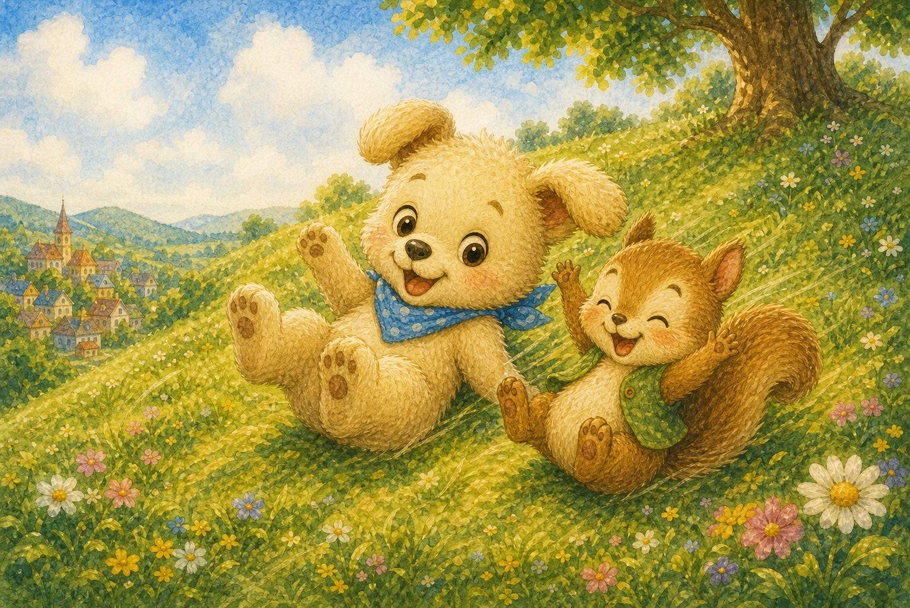
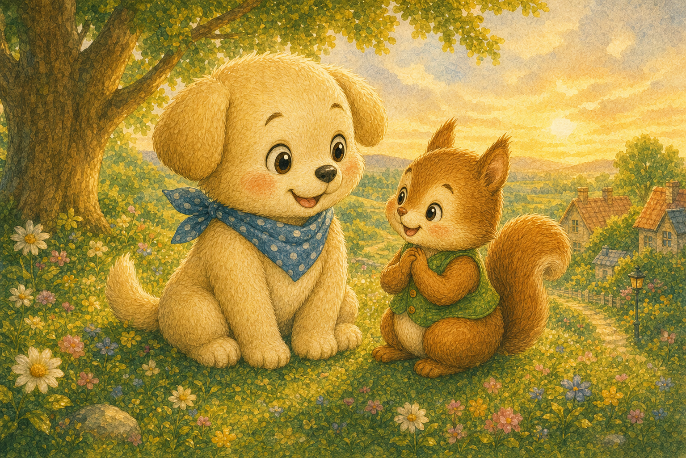
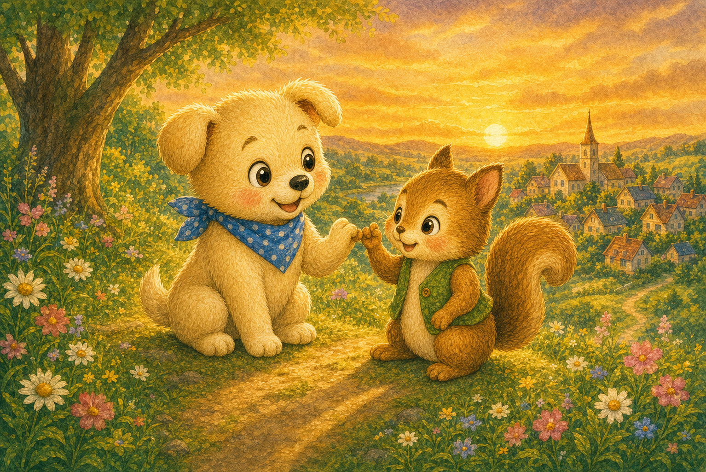

새끼손가락 약속
강아지 콩콩이는 친구 다람쥐와 새끼손가락을 걸었어요. 내일 아침 언덕에서 만나기로 약속했지요.
"꼭 만나는 거야, 약속!"

강아지 콩콩이는 친구 다람쥐와 새끼손가락을 걸었어요. 내일 아침 언덕에서 만나기로 약속했지요.
"꼭 만나는 거야, 약속!"

다음 날 아침, 콩콩이 집에 멋진 새 장난감이 도착했어요. 너무 신나서 약속이 깜빡 잊힐 뻔했지요.
"우와, 이거 진짜 갖고 싶었던 건데!"

장난감도 갖고 싶고, 친구와의 약속도 떠올랐어요. 콩콩이는 잠시 고민에 빠졌지요.
"장난감? 아니면 약속?"

콩콩이는 언덕에서 혼자 기다릴 다람쥐를 떠올렸어요. 약속을 어기면 친구가 슬퍼할 게 분명했지요.
"다람쥐가 나만 기다리고 있을 거야."

콩콩이는 장난감을 살며시 내려놓고 문을 나섰어요. 약속은 장난감보다 더 소중하다고 생각했지요.
"장난감은 나중에! 약속이 먼저야."

콩콩이는 약속 시간에 늦지 않으려 힘차게 달렸어요. 바람을 가르며 언덕으로 올라갔지요.
"기다려, 내가 가고 있어!"

언덕 위에는 다람쥐가 환하게 웃으며 기다리고 있었어요. 콩콩이를 보자 폴짝폴짝 뛰며 반겼지요.
"올 줄 알았어! 고마워, 콩콩아."

둘은 언덕에서 데굴데굴 구르며 신나게 놀았어요. 약속을 지킨 덕분에 즐거운 하루가 되었지요.
"역시 오길 정말 잘했어!"

다람쥐는 콩콩이를 더욱 믿게 되었다고 말했어요. 약속을 지키니 둘 사이가 더 단단해졌지요.
"너랑 약속하면 마음이 놓여."

콩콩이는 약속을 지키면 친구의 믿음을 얻는다는 걸 알았어요. 작은 약속도 끝까지 지키기로 마음먹었답니다.
"다음 약속도 꼭 지킬게!"